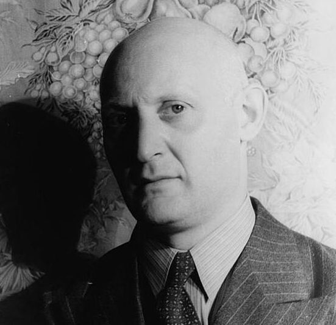

IL POGROM DI LEOPOLI
24 gennaio 2023
Pagine dal romanzo I fratelli Ashkenazi di Israel J. Singer (a cura di D. Aprigliano)
Le pagine che seguono sono tratte dalla parte finale del romanzo I fratelli Ashkenazi di Israel J. Singer, autore ebreo-polacco vissuto tra il 1893 e il 1944. Si tratta di un capitolo dedicato al pogrom di Leopoli del novembre 1918 a opera di legionari polacchi e civili ucraini. Siamo alla fine della Prima guerra mondiale, la Germania è stata sconfitta, l’impero russo si è sfaldato e la Polonia può finalmente affermarsi come nazione. Per questo motivo contende all’Ucraina alcuni territori.
Dall’autodeterminazione dei popoli alla violenza ultranazionalista, tuttavia, il passo è breve, e gli ebrei, spesso vissuti come un corpo estraneo insidiato nel corpo nazionale, sono i primi a farne le spese, soprattutto quando si cerca un capro espiatorio oppure si vuole sfogare violenza repressa. È così che dalla passione nazionalistica si passa alla carneficina antisemita.
Anche per Felix Feldblum, per il rivoluzionario che tanto aveva sofferto per la liberazione della Polonia, nella certezza che una Polonia liberata dal gioco straniero sarebbe diventata un esempio di giustizia e di uguaglianza per il resto del mondo, anche per lui era venuta l’ora del trionfo. La corona di spine che era rimasta sulla fronte della Polonia per più di cento anni era finalmente caduta. La cattedrale di Cracovia, dove riposavano le ossa dei re e dei poeti polacchi, non era più una caserma e una scuderia per la cavalleria austriaca. La bandiera polacca sventolava dal più alto pinnacolo, come in tutti gli altri angoli del paese. I giovani di Cracovia avevano formato una legione speciale che ora stava marciando sulla città di Leopoli, per liberarla dagli ucraini. A quella legione era stato unito il reggimento in cui Felix Feldblum aveva servito prima come soldato semplice e poi come ufficiale. La spada dondolante al fianco, le spalline posate tutte storte sulle spalle strette e cascanti, ora marciava alla testa delle sue truppe. Dietro, gli uomini cantavano l’inno dei Crochi, il nome che avevano assunto i legionari di Cracovia.
General Roya sul suo destriero,
alla testa dei Crochi cavalca fiero.
General Roya non ti fermare,
finché un solo russo riman da ammazzare.
General Roya continua a marciare,
finché un solo ebreo riman da ammazzare.
Gli ebrei di Leopoli appresero l’avvicinarsi dei «Crochi» e tremarono; erano venuti brutti tempi, per loro, e non per loro soltanto. La Polonia era piena di sbandati, di soldati smobilitati appartenenti alle più svariate nazioni.
Dall’Ucraina, dalla Crimea, dalla Volinia, dalla Podolia e dalla Russia Bianca, masse di tedeschi sbandati cercavano di rientrare in Germania.
Affollavano i treni, si arrampicavano sui predellini e sui tetti dei vagoni, ma anche così, non c’erano treni a sufficienza per trasportarli.
Erano una folla cenciosa e demoralizzata, e non sapevano che cosa li aspettasse il domani. Molti erano divenuti rivoluzionari e sull’uniforme portavano le coccarde rosse. Truppe alsaziane, sentendo che la Germania era liquidata, avevano proclamato la loro fedeltà alla Francia e marciavano per le strade cantando inni francesi. I polacchi del distretto di Posen, che avevano cominciato la guerra da soldati tedeschi, gettarono alle ortiche la loro fedeltà alla Germania, e in cattivo polacco si mettevano a cantare inni patriottici polacchi. Questi «figlioli prodighi» erano tenuti in alta stima dalla popolazione, in particolare dalle donne giovani. Gli venivano dati i primi posti nelle chiese e nei cortei popolari. Anche le truppe austriache, appartenenti a tutte le razze di quell’impero multicolore, riempivano le strade di Polonia. Il loro morale era ancor più basso di quello dei tedeschi. Si erano rivoltate contro i loro ufficiali, e avevano saccheggiato i depositi della sussistenza; vendevano le uniformi e le armi per pochi soldi. Ogni gruppo nazionale tornò alla propria lingua e appuntò sulle vesti l’emblema della libertà. I soldati polacchi disertarono in massa e si unirono ai reggimenti polacchi; i cechi tolsero dai berretti gli emblemi metallici dell’impero e li sostituirono con quelli della nuova Cecoslovacchia. Anche gli ungheresi proclamarono la loro indipendenza. I bosniaci, i romeni, gli sloveni, i ruteni, i serbi, i croati, tutti cantavano i loro inni nella loro lingua e tutti marciavano verso la loro patria. Soltanto gli ebrei rimanevano nei loro posti, in vicinanza delle loro case, delle loro sinagoghe, dei loro antichi cimiteri. Ma dappertutto, nelle città e nei villaggi ebraici, i muri erano coperti di manifesti che annunciavano la tempesta imminente. Gli scolari dello Stato polacco di recente liberato riempivano i muri di scritte insolenti e minacciose. «La Polonia ai polacchi», dicevano le scritte. «Gli ebrei vadano in Palestina. E se non ci vanno, saranno guai.» Sopra le marce militari che accompagnavano i cortei nelle città si cominciò a udire il rumore di vetri infranti per le sassate che venivano lanciate contro le case di ebrei. I più disgraziati di tutti furono gli ebrei della Galizia orientale, nella zona di Leopoli. Le città e i villaggi erano stati devastati dai cosacchi durante l’invasione russa. Molti ebrei erano stati scacciati dalla provincia e alcuni deportati in Siberia.
All’invasione era seguita una grande carestia, e alla carestia era seguita la peste. I soldati ebrei, arruolati tra la popolazione galiziana negli eserciti dell’impero austriaco, tornavano a casa a decine di migliaia e trovavano miseria e desolazione. Secondo una diffusa consuetudine, molti di questi soldati si erano appuntati sull’uniforme la stella di David. Ma i loro commilitoni non facevano che beffeggiarli. «Perché non ve ne andate al vostro paese? Non vi vogliamo qui.» Gli ebrei più anziani non volevano saperne di questi simboli. Ne avevano abbastanza della guerra e degli emblemi militari. Ne avevano abbastanza del servizio, della disciplina e dei modi di vita non–ebraici che erano stati costretti a seguire sotto le armi.
Quando tutto era crollato, ricominciarono a lasciarsi crescere i cernecchi e ripresero le antiche abitudini. Dimenticarono l’eretta andatura militaresca, tornarono a gremire le sinagoghe per pregare e studiare come un tempo.
Il peso immemorabile del giudaismo, il duplice fardello di questo mondo e del mondo futuro, gravò nuovamente sulle loro spalle. Dovevano riprendere il filo della loro vita da dove l’avevano lasciato cadere; pensavano agli arnesi da lavoro rimasti inutilizzati nelle soffitte delle loro case; era venuto il momento di tornare alla normalità, di guadagnarsi la vita, tirare su i bambini, educarli alla vita ebraica, sposare le figlie, insomma la lunga, gravosa, faticosa routine cui erano abituati. Nelle case di studio, nelle sinagoghe chassidiche dove si radunavano, cercavano conforto alzando gli occhi al cielo, al Re dei re.
Ma le loro preghiere erano vane. Il mondo non sarebbe tornato com’era prima; la guerra e la violenza non sarebbero cessate. Scoppiarono altre guerre più piccole, conseguenze di antiche inimicizie, tra i polacchi e i ruteni, tra i nobili polacchi e i contadini. Ogni piccolo gruppo avanzava pretese sul potere. O adesso, o mai, si dicevano. E gli ebrei erano presi in mezzo tra le parti contendenti; da qualunque parte provenissero, le pallottole attraversavano le vie e le case degli ebrei; ciascuna delle parti contendenti esigeva l’aiuto degli ebrei e li accusava di tradimento se si rifiutavano di farsi coinvolgere in quei contrasti. La più accanita di queste guerre secondarie fu combattuta a Leopoli. La città era tenuta da due eserciti rivali, l’esercito polacco e quello ucraino; ciascuno occupava la propria zona e sparava contro l’altro attraverso lo spazio che li divideva, occupato dagli ebrei.
Giovani soldati e ufficiali ebrei dell’ex esercito austriaco organizzarono una difesa ebraica, per respingere i rapinatori e gli assassini che avevano cominciato a compiere scorribande anche in pieno giorno. Gli ebrei si proclamarono neutrali tra i polacchi e gli ucraini, sperando in tal modo di placare il vincitore finale. Ma i polacchi presero questa dichiarazione di neutralità come un’offesa; e benché il comando polacco l’approvasse e firmasse un accordo ufficiale con il corpo difensivo ebraico, fra le truppe si diffuse una violenta avversione contro gli ebrei, che venivano denunciati come nemici della Polonia. I militari polacchi di bassa forza minacciavano gli ebrei apertamente. «Aspettate e vedrete!» gridavano. «Quando avremo buttato fuori gli ucraini, v’insegneremo noi, a essere neutrali!» E non mancarono di farlo. Quando gli ucraini si furono ritirati da Leopoli, le truppe polacche organizzarono un attacco al quartiere ebraico, esattamente come se fosse stata una fortezza nemica, anziché una zona inerme di una città conquistata. E al seguito delle truppe venne una folla avida di saccheggio, impiegati e infermiere, ladri e prostitute, prelati, monaci e massaie, un’accozzaglia disparata che invase le strade ebraiche. «Abbasso gli ebrei!» urlavano. «Impiccateli per la barba!» Gli ufficiali marciavano apertamente alla testa delle loro truppe, un ufficiale ogni dieci soldati. Circondarono il comando del corpo di difesa ebraico, lo disarmarono; fucilarono i capi e arrestarono tutti gli uomini. E poi cominciò la carneficina e il saccheggio. L’attacco fu iniziato con la precisione di una battaglia. Alle sette in punto di una fredda mattina di novembre, i legionari polacchi circondarono piazza Cracovia con le mitragliatrici e le autoblindo. Gli sbocchi di via Sinagoga, via Shulkev, via Ognon, e di altre vie furono bloccati, in modo che nessuno potesse uscire, quindi fu dato l’ordine di aprire il fuoco. Le pallottole delle mitragliatrici e dei fucili cominciarono a scheggiare i muri e a fracassare le finestre; avanzando lentamente, i legionari polacchi lanciavano bombe a mano contro le case e contro le porte sbarrate. Grida di terrore si levavano dall’interno delle case; e alcuni si slanciarono all’aperto e furono immediatamente abbattuti.
Levando grida di trionfo, i soldati continuavano a gettare le bombe.
Quando la popolazione fu tutta quanta atterrita, quando ebbe avuto larghi esempi di ciò che doveva aspettarsi in caso di resistenza, gli ufficiali diedero l’ordine di cessare il fuoco e inviarono pattuglie nelle case. Gli ordini venivano emanati dal Teatro Comunale, dove l’alto comando aveva posto la sua sede. Le pattuglie avanzarono di casa in casa, sfondavano le porte, penetravano nell’interno e gettavano in strada tutto ciò che contenevano. Nelle case più ricche, agli abitanti veniva ordinato di mettersi contro il muro a mani in alto, mentre gli ufficiali li frugavano in cerca di denaro, gioielli o altri oggetti di valore. Qua e là, i soldati non si accontentavano di saccheggiare: la vista di qualche bella donna accendeva le loro voglie; mariti, fratelli, figli venivano legati e in loro presenza le donne venivano violentate dalla soldataglia. E come se ciò non bastasse, soldati e ufficiali furono assaliti da un’insana sete di sangue; vi furono bambini pugnalati nelle loro culle in presenza della madre, uomini abbattuti col calcio del fucile, donne sbudellate a colpi di baionetta. Fuori, per le strade, una folla impazzita chiedeva a gran voce ancora sangue, ancora bottino.
Alle porte del quartiere stavano fermi autocarri militari sui quali i soldati ebbri e sudati caricavano le masserizie saccheggiate, che venivano quindi trasportate nei punti di raccolta. Qui, la popolazione civile lottava furiosamente per la divisione del bottino. Popolane in scialle, signore eleganti in pelliccia, ragazze di strada, infermiere, monache, maestre, tutte spingevano e urlavano per ottenere la loro parte. «Datela a me, capitano!»
«No, a me! La voglio io, quella!» urlavano. I ricchi venivano con la carrozza, per poter prendere più roba. I negozi ebraici furono vuotati di tutti i capi di vestiario, delle provviste alimentari, di ogni genere di mercanzia. Dalle porte del quartiere ebraico usciva una interminabile colonna di autocarri carichi, incrociandosi con una di autocarri vuoti che vi entrava. Il secondo giorno, quando il saccheggio fu terminato, l’alto comando diede l’ordine di appiccare il fuoco al quartiere ebraico. Ora gli autocarri portarono fusti di benzina presi dai negozi ebraici il giorno prima. I muri delle case ebraiche ne furono cosparsi; materassi, coperte, sacchi di paglia inzuppati di benzina furono ammucchiati contro le porte, in modo che nessuno potesse fuggire. Quindi vi furono accostate le torce.
Dall’interno delle case ebraiche si levarono grida di terrore: «Friggete nel vostro grasso!» urlarono i soldati e gli ufficiali. Dalle case, i legionari polacchi si volsero alle sinagoghe e alle case di studio.
Quattro ufficiali, ciascuno al comando di una squadra di dieci uomini, penetrarono nella sinagoga di Forshtetter. Strapparono la tendina dinanzi alla sacra Arca, aprirono lo sportello e s’impadronirono di tutti gli oggetti preziosi che conteneva; presero le corone d’argento, i manici dei rotoli, i calici e i candelabri. Cacciarono tutte queste cose in un sacco insieme coi parati di seta e di velluto dei giorni festivi.
I rotoli spogli furono gettati a terra, calpestati, e insudiciati.
Quando l’interno della sinagoga fu interamente devastato, i soldati lanciarono diverse bombe a mano, nell’Arca spogliata, quindi appiccarono il fuoco all’antico edificio. Due ragazzini di tredici anni che abitavano in via Sinagoga, David Reubenfeld e Israel Feigenbaum, entrarono di corsa nella sinagoga in fiamme e raccolsero i rotoli della Legge che giacevano sul pavimento. Con quei sacri oggetti tra le braccia corsero fuori, ma sulla porta della sinagoga furono abbattuti a fucilate dai legionari polacchi. Un destino analogo ebbero le altre sinagoghe e case di studio del quartiere. Gli ufficiali portarono via tutti gli oggetti d’argento dal tempio di via Shulkev.
Alcuni, non contenti del saccheggio, con ebbra frenesia, diedero libero sfogo al loro odio e al loro disprezzo per la religione ebraica. Strapparono le coperture dell’Arca, se le avvolsero sulla testa come turbanti, e si misero a danzare lì attorno, a dondolarsi in avanti e indietro parodiando gli ebrei in preghiera, tra le risate e i lazzi della soldataglia. Quando si furono divertiti abbastanza, gli ufficiali ordinarono di schiodare il pavimento, versare benzina nelle fondamenta, e appiccare il fuoco a tutto quanto. In un’altra casa di preghiera in via Sinagoga, alcuni ebrei si avvolsero nei sudar i, si coprirono il capo con gli scialli di preghiera e si misero a recitare le preghiere dei moribondi battendosi il petto. Le porte vennero chiuse e sbarrate dall’esterno, e fu appiccato il fuoco all’edificio. Gli ebrei continuarono a pregare finché le fiamme raggiunsero gli scialli di preghiera. Un ufficiale, vedendo lo spettacolo dalla finestra ne fu inorridito. Aprì una porta laterale e gridò agli ebrei di uscire. Ma nel fracasso, nei gemiti, nella confusione non fu udito, e gli ebrei perirono tra le fiamme. Il saccheggio e la distruzione del quartiere ebraico durarono tre giorni e tre notti. I soldati assassinarono e devastarono; le case e le sinagoghe furono distrutte dalle fiamme; i pompieri della città non si mossero dalle caserme. Il quarto giorno gli ebrei atterriti, fiaccati dalla catastrofe, strisciarono fuori dalle macerie e cominciarono a cercare i loro morti. I cadaveri carbonizzati furono avvolti in scialli di preghiera, i resti non identificati furono messi entro giare, per potergli dare decorosa sepoltura. Dalle rovine ancora fumanti, frammenti di arredi sacri e pezzi di pergamena che un tempo erano stati rotoli della Legge, furono messi dentro altre giare di terracotta per poter essere seppelliti anch’essi. Settantadue morti furono allineati sotto gli scialli di preghiera, e tra di essi uomini singhiozzanti e donne urlanti cercavano i loro cari. Tutti gli ebrei della città si adunarono per il funerale collettivo dei martiri e dei rotoli profanati e distrutti. Tra le migliaia di uomini e donne in lutto spiccava una figura in uniforme azzurro– chiaro: era Felix Feldblum, ufficiale della Legione polacca, combattente per la libertà della Polonia e già credente nel suo messianico avvenire.
(Estratto da Israel J. Singer, I fratelli Ashkenazi, Milano, Longanesi, 2004)

Il romanzo in breve
Uno dei capolavori della letteratura del ’900 nella pregevole traduzione di Bruno Fonzi.
Una lunga fila di emigranti è in marcia verso la città polacca di Lodz: fra loro una variopinta comunità di ebrei ortodossi che intende guadagnarsi da vivere con la tradizionale filatura a telaio. Sarà il seme dal quale nasceranno grandi industrie tessili capaci di imporre le loro merci in tutta l’Europa.
In questo piccolo e operoso mondo, dove il tempo è scandito dal lavoro e dalle pratiche religiose, nascono i due figli del pio Reb Abraham Hirsch Ashkenazi, opposti nel carattere fin dalla prima infanzia: Jakob Bunin, vitale e generoso, rappresenta la forza naturale e l’istinto gioioso di vivere, mentre Simcha Meier, introverso e abile negli affari, riversa la sua febbrile inquietudine nell’imprenditoria. La parabola dell’esistenza porterà Jakob ad affermarsi con il suo talento di comunicatore, mentre Simcha toccherà le vette del capitalismo industriale grazie a un miscuglio di cupidigia e lungimiranza che tutto travolge in nome del profitto.
Attorno a loro, tra la fine dell’Ottocento e il primo conflitto mondiale, si svolgono le grandi vicende della Storia e gli eventi minimi di una folla di personaggi uniti dalla comune spiritualità ebraica, che sfocia in conflitti generazionali, al punto di indurre i giovani a un progressivo allontanamento dalla tradizione dei padri, fino a esperienze estreme come la rivoluzione, la negazione degli affetti familiari e l’affermazione dell’individualismo assoluto.
Per Jakob e Simcha, divisi per quasi tutta la loro vita, il risultato è il distacco dal giudaismo, con la conseguente perdita della propria identità per costruirsi una rispettabilità borghese. Ma tutto è inutile, destinato al fallimento. Insieme al capitalismo si sgretolano i destini di uomini e donne travolti dal tempo e dalla Storia. Dei fratelli Ashkenazi, riuniti in un ultimo, disperato abbraccio, non resterà che l’infinita vanità del tutto.
Israel Joshua Singer racconta la grandiosa e feroce epopea borghese degli ebrei polacchi in un romanzo insieme corale e individuale, nel solco del grande realismo ottocentesco ma percorso dalle inquietudini del Novecento: un magistrale affresco che si pone come il pendant ebraico de “I Buddenbrook” di Thomas Mann, e che spiega perché il premio Nobel Isaac Singer disse dell’amato fratello: “Sto ancora imparando da lui e dalla sua opera”.
(Estratto dalla quarta di copertina dell’edizione Longanesi, collana Audiolibri liquidi)